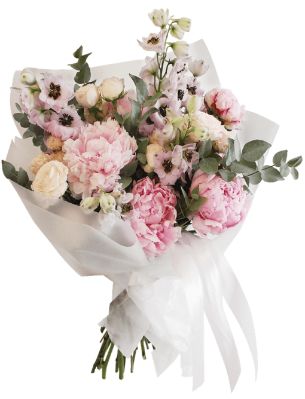
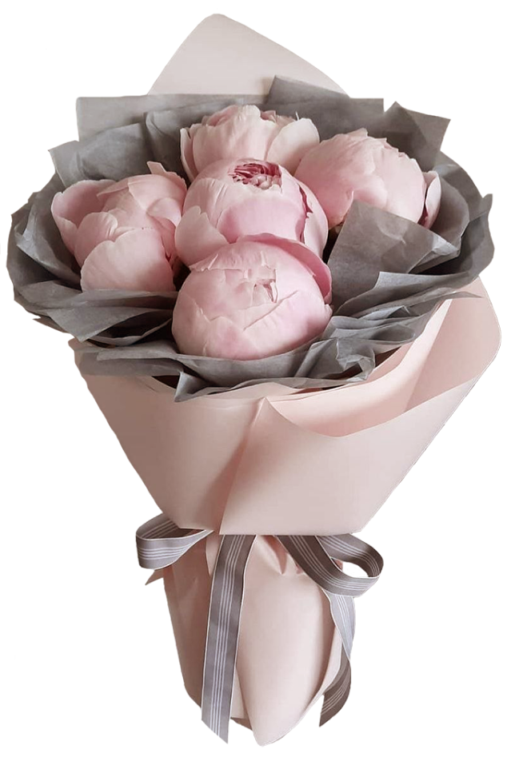
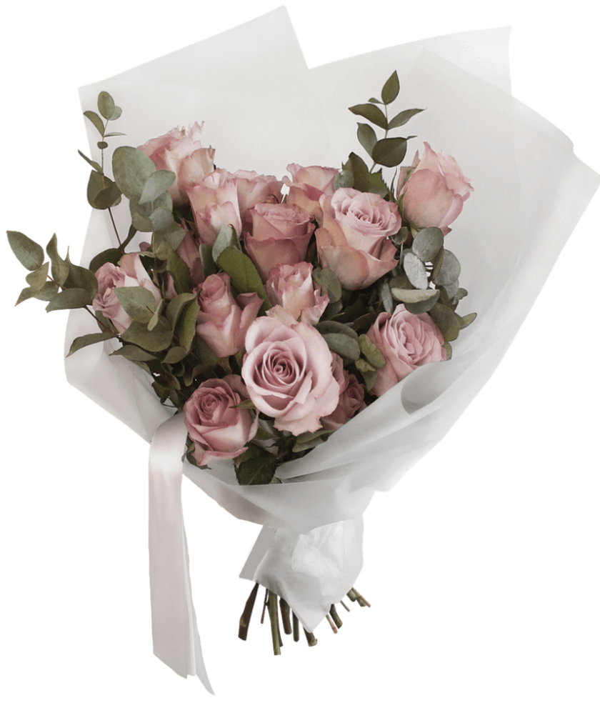
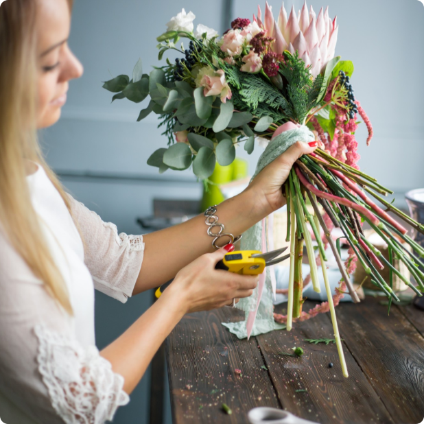
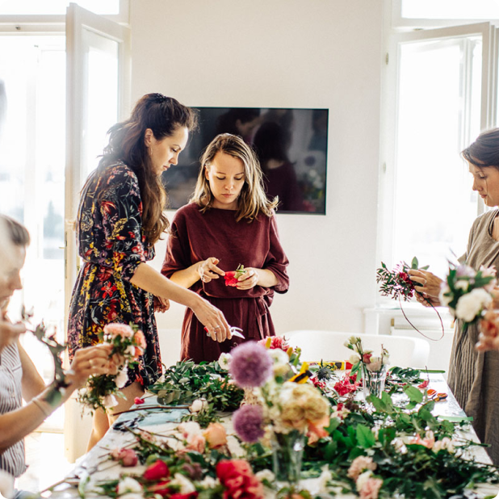
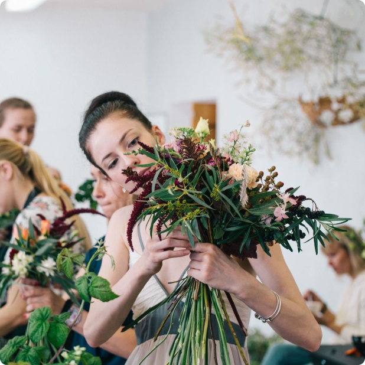
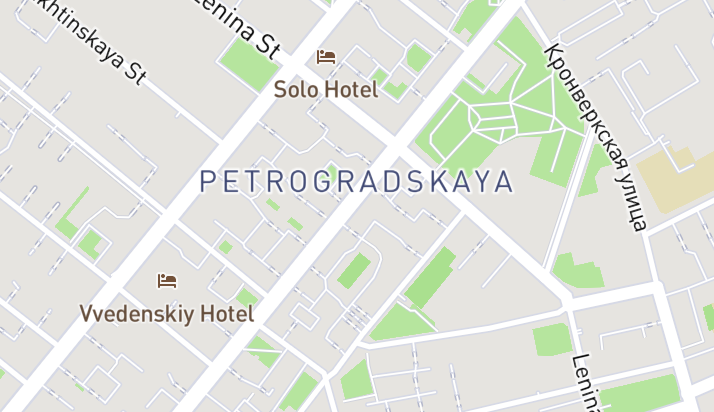

Flos - это
Проект, который создан профессионалами и страстными любителями
цветов - нашими флористами-художниками для того, чтобы вы могли совершенствоваться в этом нелегком, но интересном деле
флористики вместе с нами.
Наш конструктор букетов - это удобный инструмент для создания букетов как
для любителей, так и для профессионалов. При выборе желанных цветов
вы также получаете инструкцию по сбору букета в любой технике и другие сопроводительные материалы, а также простую стандартную упаковку.



Опытные флористы студии Flos доступно объяснят и научат как профессионалов, так и начинающих, увлекающихся цветочными композициями и флористикой. Вы соберете прекрасный букет из живых цветов, флорариум, либо любую другую композицию. Небольшие группы позволяют преподавателю найти
индивидуальный подход и уделить время каждому гостю.



В стоимость каждого мастер-класса входят формы для композиций, весь необходимый инвентарь для работы, а также памятный диплом и композиция, которую вы заберете домой.
Цветочная мастерская Flos
Санкт-Петербург, ул. Ленина, 12
Телефон: +7 (900) 000-00-00
E-mail: order@flos.com
Мы открыты для вас с 9 утра до 21 каждый день.
